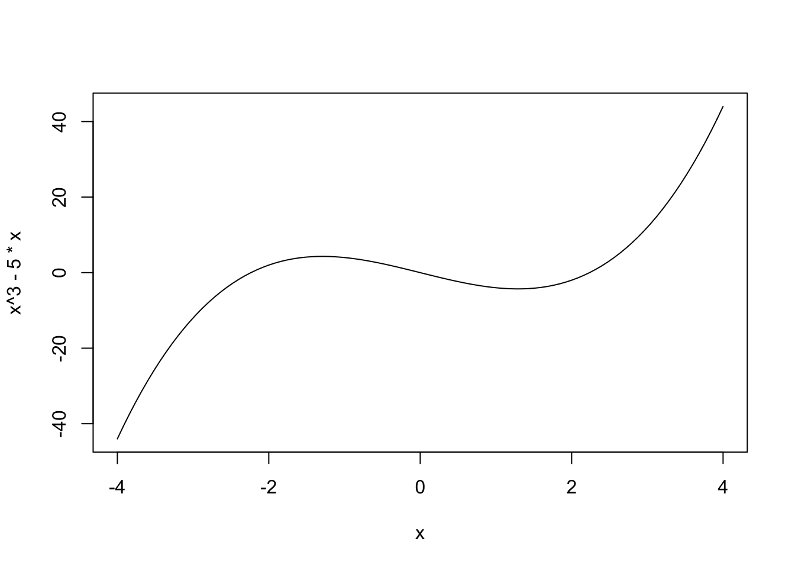
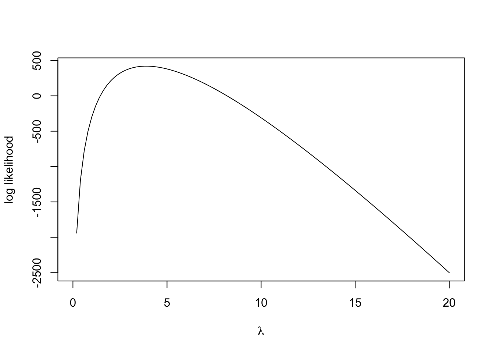

We have seen in lectures that the MLEs for the parameters of several common distributions can be found in closed form. However, in general, the problem is not guaranteed to be so easy with a simple closed-form result. Therefore, in these situations, we will have to find and maximise the likelihood numerically.
For this practical, we will focus on the Poisson distribution, which is particularly appropriate for counts of events occuring randomly in time or space. While we can find a tidy mathematical result for this case, we’ll use it to illustrate the general method of maximum likelihood. Suppose we have a simple problem with one piece of data, \(X\), and we know that \(X\sim\text{Po}(\lambda)\) for some unknown parameter value \(\lambda\).
c,
seq,mean, sum,
lengthfunctionshist, and adding simple lines
to plots ablinecolourcurveoptim$
operatorOur likelihood calculations begin with writing down the likelihood function of our data. For a single observation \(X=x\) from a Poisson distribution, the likelihood is the the probability of observing \(X=x\) written as a function of the parameter \(\lambda\): \[ \ell(\lambda) = \mathbb{P}[X=x~|~\lambda] = \frac{e^{-\lambda}\lambda^x}{x!}. \]
To begin with, suppose we observe a count of \(X=5\).
poisson that takes
arguments lambda which evaluates the Poisson probability
\(\mathbb{P}[X=5~|~\lambda]\).
Hint: You will need the exp and
factorial functions.0.1277167.
What we have just created is the likelihood function, \(\ell(\lambda)\), for the Poisson parameter \(\lambda\) given a single observation of \(X=5\).
Before we consider a larger data problem, let’s briefly explore this simplest case of a Poisson likelihood. Let’s begin with a plot of the likelihood function itself.
Using curve to plot a funtion
Given an expression for a function \(f(x)\), we can plot the values of \(f\) for various values of \(x\) in a given range. This can be
accomplished using an R function called curve. The main
syntax for curve is as follows:
curve(expr, from = NULL, to = NULL, add = FALSE,...)
The arguments are:
expr: an expression or function in a variable
x which evaluates to the function to be drawn. Examples
include sin(x) or x+3*x^2from, to: specifies the range of
x for which the function will be plottedadd: if TRUE the graph will be added to an
existing plot; if FALSE a new plot will be created...: any of the standard plot customisation arguments
can be given here (e.g. col for colour, lty
for line type, lwd for line width)For example, the following code when evaluated produces the plot below:
curve(x^3 - 5*x, from = -4, to = 4)
curve to draw a quick plot of the
following functions:
pi as the constant \(\pi\)add=TRUE option to superimpose \(g(x)=0.5sin(x)+cos(x)\) as a red curve over
\([0,2\pi]\) on the previous plot.curve and your poisson function
to draw a plot of your Poisson likelihood for \(\lambda\in[0.1, 20]\).Typically, we usually work with the log-likelihood \(\mathcal{L}(\lambda)=\log\ell(\lambda)\), rather than the likelihood itself. This can often make the mathematical maximisation simpler, the numerical computations more stable, and it is also intrinsically connected to the idea of information and variance (which we will consider later).
poisson function to compute the logarithm
of the Poisson probability, and call this new function
logPoisson. You will need to use the log
function.The Poisson distribution has been used by traffic engineers as a model for light traffic as the Poisson is suitable for representing counts of independent events which occur randomly in space or time with a fixed rate of occurrence. This assumption is based on the rationale that if the rate of occurrence is approximately constant and the traffic is light (so the individual cars move independently of each other), then the distribution of counts of cars in a given time interval or space area should be nearly Poisson (Gerlough and Schuhl 1955).
For this problem, we will consider the number of right turns made at a specific junction during three hundred 3-minute intervals. The following table summarises these observations.| N | 0 | 1 | 2 | 3 | 4 | 5 | 6 | 7 | 8 | 9 | 10 | 11 | 12 |
| Frequency | 14 | 30 | 36 | 68 | 43 | 43 | 30 | 14 | 10 | 6 | 4 | 1 | 1 |
traffic <- rep(0:12, c(14,30,36,68,43,43,30,14,10,6,4,1,1))Note that we interpret these data as 14 observations of the value \(0\), 30 observations of the value \(1\), and so forth.
traffic corresponding to the above data set.histogram of the data. Does an assumption of a
Poisson distribution appear reasonable?
If we suppose a Poisson distribution might be a good choice of distribution for this dataset, we still need to find out which particular Poisson distribution is best by estimating the parameter \(\lambda\).
Let’s begin by constructing the likelihood and log-likelihood functions for this data set of 300 observations. Assuming that the observations \(x_1, \dots, x_{300}\) can be treated as 300 i.i.d. values from \(\text{Po}(\lambda)\), the log-likelihood function for the entire sample is: \[ \mathcal{L}(\lambda) = -n\lambda +\left(\sum_{i=1}^n x_i \right) \log \lambda, \] up to an additive constant from the factorial terms (which we know we can ignore for the purposes of these calculations).
logLike with a single parameter
lambda, which evaluates the log-likelihood expression above
for the traffic data and the supplied values of
lambda. Hint: Use length and
sum to compute the summary statistics.curve. Without
further calculations, use the plot to have a guess at the maximum
likelihood estimate \(\widehat{\lambda}\) – we’ll check this
later!

The maximum likelihood estimate (MLE) \(\widehat{\lambda}\) for the \(\lambda\) parameter of the Poisson distribution is the value of \(\lambda\) which maximises the likelihood \[ \widehat{\lambda}=\operatorname{argmax}_{\lambda\in\Omega} \ell(\lambda)= \operatorname{argmax}_{\lambda\in\Omega} \mathcal{L}(\lambda). \]
Therefore to find the MLE, we must maximise \(\ell\) or \(\mathcal{L}\). We know we can do this
analytically for certain common distributions, but in general we’ll have
to optimise the function numerically instead. For such problems,
R provides various functions to perform a numerical
optimisation of a give function (even one we have defined ourself). The
function we will focus on is optim:
R offers several optimisation functions, however the one
we shall be using today is optim which is one of the most
general optimisation functions. This generality comes at the price of
having a lot of optional parameters that need to be specified.
For our purposes, we’re doing a 1-dimensional optimisation of a given
function named logLike. So the syntax we will use to
maximise this function is as follows
optim(start, logLike, lower=lwr, upper=upr, method='Brent', control=list(fnscale=-1))
The arguments are:
start : an initial value for \(\lambda\) at which to start the
optimisation. Replace this with a sensible value.logLike : this is the function we’re optimising. In
general, we can replace this with any other function.lower=lwr, upper=upr : lower and upper bounds to our
search for \(\widehat{\lambda}\).
Replace lwr and upr with appropriate
numerical values; an obvious choice for this problem is the min and
max of our data.method='Brent' : this selects an appropriate
optimisation algorithm for a 1-D optimisation between specified bounds.
Other options are available for other classes of optimisation
problem.control=list(fnscale=-1) : this looks rather strange,
but is simply telling optim to maximise the given
function, rather than minimise which is the default (it’s
instructing R to scale the function by a factor of \(-1\) and minimise the result).optim returns a number of values in the form of a list.
The relevant components are:
par : the optimal value of the parametervalue : the optimum of the function being
optimised.convergence: if 0 this indicates that the
optimisation has completed successfully.optim to maximise the logLike
function. You should choose an appropriate initial value for \(\lambda\), as well as sensible
upper and lower bounds.traffic data. Does this agree with your
results from directly maximising the log-likelihood?
You should see output something like this:
## $par
## [1] 3.893333
##
## $value
## [1] 419.6223
##
## $counts
## function gradient
## NA NA
##
## $convergence
## [1] 0
##
## $message
## NULLThe output of optim is in the form of a
list. Unlike vectors, lists can combine many
different variables together (numbers, strings, matrices, etc) and each
element of a list can be given a name to make it easier to access.
For example, we can create our own lists using the list
function:
test <- list(Name='Donald', IQ=-10, Vegetable='Potato')
Once created, we can access the named elements of the list using the
$ operator. For example,
test$IQ
will return the value saved to IQ in the list,
i.e. -10. RStudio will show auto-complete suggestions for
the elements of the list after you press $, which can help
make life easier.
We can use this $ operator to extract the MLE value from
optim by first saving the results to a variable, called
results say, and then extracting the list element named
par, which corresponds to the maximising value of \(\lambda\).
optim and save it to a new variable called
mle.abline to:
col='red' argument to your plotting function.Let’s return to the original distribution of the data. The results of our log-likelihood analysis suggest that a Poisson distribution with parameter \(\widehat{\lambda}\) is the best choice of Poisson distributions for this data set.
histogram of the traffic
data.poisson function to evaluate the Poisson
probability \(\mathbb{P}[X=x]\) when
\(X\sim\text{Po}(\widehat{\lambda})\).
Save the function as poissonProb.curve function to add draw this function over
your histogram in red. (We will ignore the fact that \(X\) is discrete for the time-being.)We will return to the question of fitting distributions to data and the “goodness of fit” later next term.
For an iid sample \(X_1,\dots,X_n\) from a sufficiently nicely-behaved (“regular”) density function \(f(x_i~|~\theta)\) with unknown parameter \(\theta\), the sampling distribution of the MLE \(\widehat{\theta}\) is such that \[ \widehat{\theta} \rightsquigarrow \text{N}\left(\theta, \frac{1}{\mathcal{I}_n(\theta)}\right), \] as \(n \rightarrow\infty\). For large samples, we can also replace the expected Fisher information in the variance with the observed information, \(I(\hat{\theta})=-\mathcal{L}''(\widehat{\theta})\) instead, Whilst we may be used to finding Normal distributions in unusual places, this result is noteworthy as we never assumed any particular distribution of our data here. This result therefore provides us with a general method for making inferences about parameters of distributions and their MLEs for problems involving large samples!
In particular, we can apply this to our Poisson data problem above to construct a large-sample approximate \(100(1-\alpha)\%\) confidence interval for \(\lambda\) in the form: \[ \widehat{\lambda} \pm z^*_{\alpha/2} \frac{1}{\sqrt{-\mathcal{L}''(\widehat{\lambda})}}, \] where \(z^*_{\alpha/2}\) is the \(\alpha/2\) critical value of a standard Normal distribution and we have estimated the expected Fisher information \(\mathcal{I}_n(\theta)\) by the observed information \(I(\widehat{\lambda})=-\mathcal{L}''(\widehat{\lambda})\).
R computes the second derivative at
the maximum, \(\mathcal{L}''(\widehat{\lambda})\),
as part of the maximisation process. To do this, re-run your
optimisation, but add the additional argument hessian=TRUE.
You should now obtain R output that looks like this:
## $par
## [1] 3.893333
##
## $value
## [1] 419.6223
##
## $counts
## function gradient
## NA NA
##
## $convergence
## [1] 0
##
## $message
## NULL
##
## $hessian
## [,1]
## [1,] -77.05481optim will now contain an additional
element named hessian. Extract this element, multiply by
-1, and save it as obsInfo.solve
function. Try this now on obsInfo. Save this to
varMLE.obsInfo is just a scalar (or a \(1\times1\) matrix), we should just return
the reciprocal \(\frac{1}{I(\widehat{\lambda})}\) - check
this now!varMLE will be in the form of a \(1\times 1\) matrix rather than a scalar (as
the Hessian matrix is a matrix of the second order partial derivatives).
To extract the value from within the matrix, run the following code
varMLE <- varMLE[1,1]
qnorm) to find the critical \(z^*_{\alpha/2}\) value for a 95% confidence
interval. Save this as zcrit.mle, zcrit, and
varMLE to evaluate an approximate 95% Wald confidence
interval for \(\lambda\).